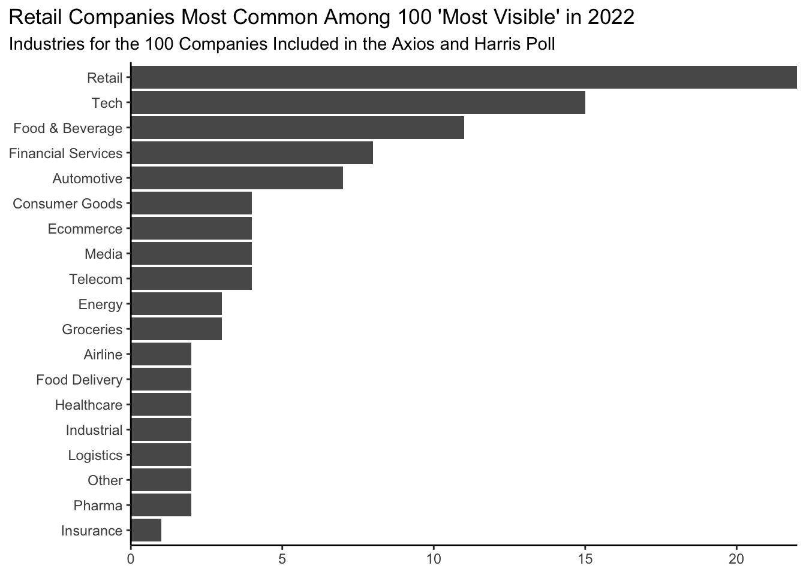
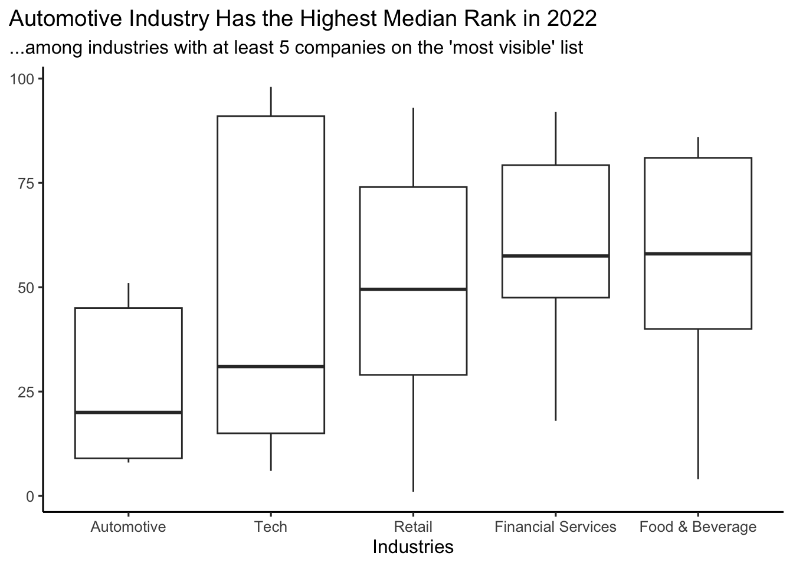
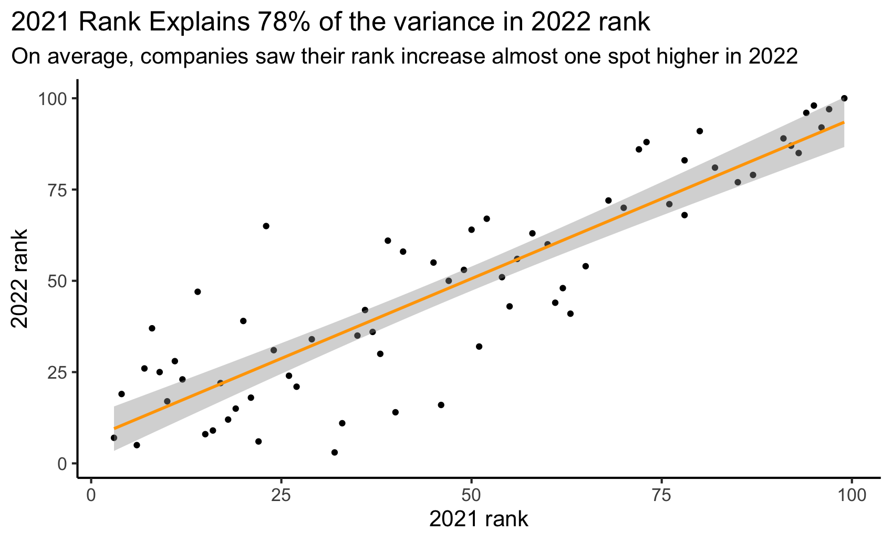
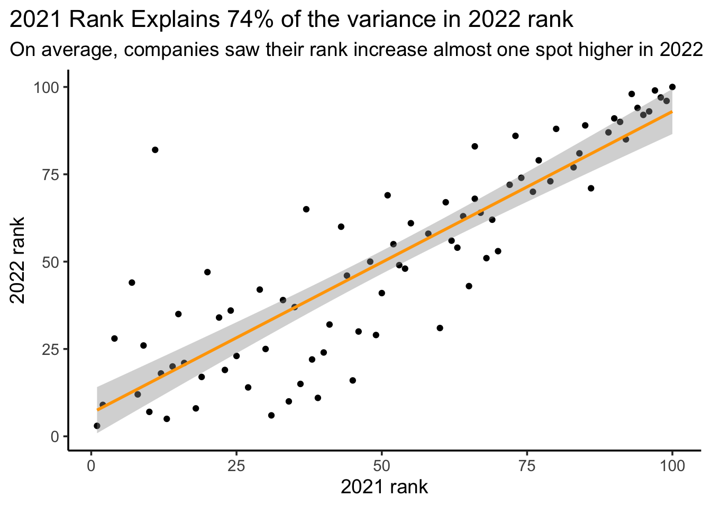

library(tidyverse)
library(tidymodels)COGS 137 - Winter 2023 - Midterm (Answer Key)
Rules
Your solutions must be written up in the R Markdown (Rmd) file called
midterm-01.Rmd. This file must include your code and write up (written explanation) for each task.Be sure to knit your file to HTML prior to submission and include both the .Rmd and .html files on GitHub. Your “submission” will be whatever is in your exam repository at the deadline.
If you cannot figure out the code for a question and this is causing you to not be able to knit your file, set the code chunk to
eval = FALSE(but leave your code there - chance for partial credit!) and then knit.This exam is open book, open internet, closed other people. You may use any online or book-based resource you would like, but you must include citations for any code that you use. You may not consult with anyone else about this exam, including any other humans on the internet or one another.
You have until 11:59pm on Monday, Feb 13th to complete this exam and turn it in via your personal Github repo - late work will not be accepted. Technical difficulties are not an excuse for late work - do not wait until the last minute to knit / commit / push.
There will be no Campuswire posts about questions on the exam. If you are unsure of something, include a note in your exam. We’ll consider this in grading. However, if you think there is a mistake in the exam or are having technical issues, please DM or email Prof Ellis as soon as possible.
Each question requires a (brief) narrative as well as a (brief) description of your approach. You can use comments in your code, but do not extensively count on these. I should be able to suppress all the code in your document and still be able to read and make sense of your answers to the questions.
Even if the answer seems obvious from the R output, make sure to state it in your narrative as well. For example, if the question is asking what is 2 + 2, and you have the following in your document, you should additionally have a sentence that states “2 + 2 is 4.” You just want us to be clear that you know the answer to the question.
2 + 2
# 4Academic Integrity Statement
I, ____________, hereby state that I have not communicated with or gained information in any way from my classmates or anyone during this exam, and that all work is my own.
A note on sharing / reusing code: I am well aware that a huge volume of code is available on the web to solve any number of problems. For this exam you are allowed to make use of any online resources (e.g. StackOverflow) but you must explicitly cite where you obtained any code you directly use (or use as inspiration). You are also not allowed to ask a question on an external forum, you can only use answers to questions that have already been answered. Any recycled code that is discovered and is not explicitly cited will be treated as plagiarism. All communication with classmates is explicitly forbidden.
Grading and feedback
This exam is worth 14% of your grade. You will be graded on the correctness of your code, correctness of your answers, the clarity of your explanations, and the overall organization of your document. (There’s no one “right” organization but the template gets you started on a well-organized exam. We should be able to easily navigate your midterm to find what we’re looking for.) Organization + Clarity in written communication - 1pt
Logistics
Answer the questions in the document called midterm-01.Rmd. Add your code and narrative in the spaces below each question. Add code chunks as needed. Use as many lines as you need, but keep your narrative concise. Be sure to knit your file to HTML and view the file prior to turning it in.
Packages
You will need the tidyverse and tidymodels packages for this midterm. If working on datahub, these package has been installed, but you will need to load them. You are allowed, but not required, to use additional packages.
The data
The data we’ll be using come from The Axios and Harris Poll and have been provided by the TidyTuesday team.
The data are stored in two different files in the data/ folder: poll.csv and reputation.csv. You’ll want to read each table in and understand what each variable represents prior to completing the exam.
Each variable and the data overall are described in detail here. You should click on that link to see what information is stored in each column in the datasets. But briefly, these two files include data about the 100 “most visible” brands in America. Specifically, reputation.csv includes information from the 2022 poll about these 100 stores across different reputation categories. poll.csv includes information about the same 100 stores but includes information about their rankings across multiple years.
poll <- read_csv("data/poll.csv")
reputation <- read_csv("data/reputation.csv")Questions
Question 1 (0.5 points)
How many different industries (industry variable) are represented in these data?
# either df can be used here
poll |>
distinct(industry) # |># A tibble: 19 × 1
industry
<chr>
1 Retail
2 Food & Beverage
3 Groceries
4 Tech
5 Ecommerce
6 Automotive
7 Healthcare
8 Other
9 Logistics
10 Financial Services
11 Industrial
12 Consumer Goods
13 Pharma
14 Telecom
15 Insurance
16 Media
17 Energy
18 Airline
19 Food Delivery # count() # can optionally include count()
# OR
n_distinct(poll$industry)[1] 19There are 19 different industries represented.
Grader Note
Students largely did well here.
Question 2 (0.5 points)
- Which company had the lowest overall ranking in 2022?
- And for which category (from the
namevariable) did this organization score lowest?
reputation |>
filter(rank == max(rank)) |> # could also hard code rank == 100 as you know 100 companies included in dataset
arrange(score)# A tibble: 7 × 5
company industry name score rank
<chr> <chr> <chr> <dbl> <dbl>
1 The Trump Organization Other ETHICS 51.2 100
2 The Trump Organization Other TRUST 52.9 100
3 The Trump Organization Other CULTURE 53.0 100
4 The Trump Organization Other CITIZENSHIP 53.6 100
5 The Trump Organization Other GROWTH 55.1 100
6 The Trump Organization Other P&S 55.7 100
7 The Trump Organization Other VISION 59.4 100# ChatGPT used a really circuitous approach using baseR indexing/filtering that would not work for this dataset- The Trump Organization
- Ethics
Grader Note
Students largely did well here. Most common error was miscalculating the score within category, due to misunderstanding the structure of the data.
Question 3 (1 point)
Which company in the reputation.csv dataset has the “best” average (mean) rank across all seven categories?
reputation |>
group_by(company) |>
summarize(avg_rank = mean(rank)) |>
arrange(avg_rank)# A tibble: 100 × 2
company avg_rank
<chr> <dbl>
1 Trader Joe's 4.86
2 The Hershey Company 5
3 Patagonia 6.71
4 HEB Grocery 7
5 Samsung 8.86
6 Wegmans 10.4
7 Amazon.com 12.1
8 Toyota Motor Corporation 12.4
9 Honda Motor Company 13.1
10 Microsoft 13.1
# … with 90 more rowsTrader Joe’s has the highest average ranking.
Grader Note
Students largely did well here. Most common error was misreading the question.
Question 4 (1 point)
Which company had the biggest increase in rank from 2021 to 2022?
poll |>
filter(year==2021) |>
arrange(desc(change))# A tibble: 100 × 8
company industry 2022_…¹ 2022_…² change year rank rq
<chr> <chr> <dbl> <dbl> <dbl> <dbl> <dbl> <dbl>
1 The Home Depot Retail 16 78.9 29 2021 45 75.4
2 Google Tech 31 77.8 29 2021 60 73.3
3 IBM Tech 11 79.5 28 2021 39 76.3
4 Samsung Tech 6 80.5 25 2021 31 77.5
5 Sony Tech 10 79.6 24 2021 34 77.3
6 Starbucks Corporation Food & Bevera… 43 76.6 22 2021 65 72.3
7 Microsoft Tech 15 79 21 2021 36 76.8
8 Adidas Retail 29 77.9 20 2021 49 75.1
9 General Motors Automotive 51 75.4 17 2021 68 72
10 Yum! Brands Food & Bevera… 53 75.3 17 2021 70 71.5
# … with 90 more rows, and abbreviated variable names ¹`2022_rank`, ²`2022_rq`# if "change" column not noticed
poll |>
filter(year==2021) |>
mutate(rank_diff = rank - `2022_rank`) |>
arrange(desc(rank_diff))# A tibble: 100 × 9
company indus…¹ 2022_…² 2022_…³ change year rank rq rank_…⁴
<chr> <chr> <dbl> <dbl> <dbl> <dbl> <dbl> <dbl> <dbl>
1 The Home Depot Retail 16 78.9 29 2021 45 75.4 29
2 Google Tech 31 77.8 29 2021 60 73.3 29
3 IBM Tech 11 79.5 28 2021 39 76.3 28
4 Samsung Tech 6 80.5 25 2021 31 77.5 25
5 Sony Tech 10 79.6 24 2021 34 77.3 24
6 Starbucks Corporati… Food &… 43 76.6 22 2021 65 72.3 22
7 Microsoft Tech 15 79 21 2021 36 76.8 21
8 Adidas Retail 29 77.9 20 2021 49 75.1 20
9 General Motors Automo… 51 75.4 17 2021 68 72 17
10 Yum! Brands Food &… 53 75.3 17 2021 70 71.5 17
# … with 90 more rows, and abbreviated variable names ¹industry, ²`2022_rank`,
# ³`2022_rq`, ⁴rank_diff# Chat GPT assumes you need a join/doesn't understand the structure of the dataThe Home Depot and Google saw the biggest jump, each increasing by 29 places.
Grader Note
Because of the wording of the question, suggesting that there was only one company, credit was granted if students said either Home Depot or Google (or both).
Question 5 (1.5 points)
For the industry with only a single “most visible” company in the dataset, has their RQ score been increasing or decreasing overall since 2017?
# find the industry programmatically (or do a group by and figure out that it's insurance)
indus <- poll |>
group_by(industry) |>
count() |>
arrange(n) |>
ungroup() |>
slice(1) |>
pull(industry)
# or
indus <- poll |>
distinct(company, industry) |>
group_by(industry) |>
summarise(count = n()) |>
filter(count == "1") |>
pull(industry)
# look at this output
poll |>
filter(industry == indus)# A tibble: 5 × 8
company industry `2022_rank` 2022_…¹ change year rank rq
<chr> <chr> <dbl> <dbl> <dbl> <dbl> <dbl> <dbl>
1 Progressive Corporation Insurance 57 74.4 NA 2017 NA 72.7
2 Progressive Corporation Insurance 57 74.4 NA 2018 NA 73.2
3 Progressive Corporation Insurance 57 74.4 NA 2019 NA 71.5
4 Progressive Corporation Insurance 57 74.4 NA 2020 NA 74
5 Progressive Corporation Insurance 57 74.4 NA 2021 NA NA
# … with abbreviated variable name ¹`2022_rq`# could also plot to determine but would take more work b/c data are across multiple columns - not tidy!While initially there was some variability, Progressive’s RQ has been increasing overall (74.4 in 2022, lower than that years prior).
Grader Note
Avoid hard-coding whenever possible. Porgrammatically determining the industry takes more work here, but avoids possible typos. Credit was granted if hard-coded. Most common error here was likely misreading the question.
Question 6 (2 points)
How many companies from each industry category are represented in the 2022 ‘100 Most Visible’ companies in America data? Generate a visualization to display the answer to this question. Be sure to follow best visualization practices discussed in class.
# note - should only display 100 companies total
poll |> distinct(company, .keep_all=TRUE) |>
ggplot(aes(y=fct_rev(fct_infreq(industry)))) +
geom_bar() +
labs(title = "Retail Companies Most Common Among 100 'Most Visible' in 2022",
subtitle = "Industries for the 100 Companies Included in the Axios and Harris Poll") +
scale_x_continuous(expand = c(0, 0)) +
theme_classic() +
theme(plot.title.position = "plot",
axis.title = element_blank())
# ChatGPT does data manipulation first and then plots from there; does include some "best practices" for data viz...but their operations are not correct
Grader Note
Plot should only display 100 companies. Barplot great here. Remember that categorical variables should be ordered meaningfully. Credit was lost if they were not, unless you directly labeled the values. Titles and axis labels are required. Because feedback for hw02 had not yet been returned, points were not deducted if your title was not as informative as it could have been. Most common errors: 1) not considering how to best display the plot so that labels were most readable (for most, this involved putting them on the y-axis); 2) not ordering axis with categorical data; 3) including more than 100 companies.
Question 7 (2 points)
Of industries that have at least 5 companies in the dataset, which industry has the highest median 2022 rank? Generate a visualization that allows you to answer this question. Be sure to follow best practices.
industries <- poll |>
distinct(company, .keep_all=TRUE) |>
group_by(industry) |>
count() |>
filter(n>5) |>
pull(industry)
poll |>
filter(industry %in% industries) |>
ggplot(aes(x=fct_reorder(industry, `2022_rank`), y=`2022_rank`)) +
geom_boxplot() +
labs(title = "Automotive Industry Has the Highest Median Rank in 2022",
subtitle = "...among industries with at least 5 companies on the 'most visible' list",
x = "Industries") +
theme_classic(base_size = 12) +
theme(plot.title.position = "plot",
axis.title.y = element_blank())
# a bit more convoluted answer on Chat GPT
Grader Note
Full credit was granted whether a boxplot or a barplot was used; however, a boxplot displays more information overall. Remember that categorical variables should be ordered meaningfully. Credit was lost if they were not, unless you directly labeled the values. Titles and axis labels are required. Because feedback for hw02 had not yet been returned, points were not deducted if your title was not as informative as it could have been. Most common errors: 1) not filtering w/ correct logic and 2) not ordering axis with categorical information
Question 8 (2 points)
Your boss is curious about how much rankings change from one year to the next. To answer this question, they ask you to determine how well 2021 rankings explain the following year’s 2022 rankings. Generate a linear model to answer this question. Be sure to include your interpretation of the model (in other words your answer to the question “how well do 2021 rankings explain 2022’s rankings?”)
df <- poll %>% filter(year == 2021)
mod <- linear_reg() |>
set_engine("lm") |>
fit(`2022_rank` ~ rank, data = df)
mod |> tidy()# A tibble: 2 × 5
term estimate std.error statistic p.value
<chr> <dbl> <dbl> <dbl> <dbl>
1 (Intercept) 6.63 3.37 1.97 5.27e- 2
2 rank 0.864 0.0573 15.1 6.08e-25mod |>
glance()# A tibble: 1 × 12
r.squared adj.r.squa…¹ sigma stati…² p.value df logLik AIC BIC devia…³
<dbl> <dbl> <dbl> <dbl> <dbl> <dbl> <dbl> <dbl> <dbl> <dbl>
1 0.742 0.739 14.8 227. 6.08e-25 1 -332. 671. 678. 17411.
# … with 2 more variables: df.residual <int>, nobs <int>, and abbreviated
# variable names ¹adj.r.squared, ²statistic, ³deviance# Chat GPT gets the estimate incorrect (0.8 instead of 0.86) and Rsquared states 60% rather than 74%We can see here that the 2021 data explain 74% of the variance in the 2022 data, making it a pretty good model for explaining 2022 rankings. Further, by looking at the coefficient, a company who was ranked in both 2021 and 2022 could expect their rank to increase, on average, by 0.86 in 2022.
Grader Note
Model had to be interpreted accurately for full credit and answer the question posed. Most common errors were: 1) flipping the predictor and outcome; 2) not answering the question posed
Question 9 (2.5 points)
Recreate the plot included below using the data you’ve been working with. Once you have created the visualization, in no more than one paragraph, describe what you think the point of this visualization might be.

ggplot(df, aes(x=rank, y=`2022_rank`)) +
geom_point() +
geom_smooth(method = "lm", col="orange") +
theme_classic(base_size = 14) +
labs(title = "2021 Rank Explains 74% of the variance in 2022 rank",
subtitle = "On average, companies saw their rank increase almost one spot higher in 2022",
x = "2021 rank",
y = "2022 rank") +
theme(plot.title.position = "plot")
Grader Note
On the answer key I have fixed the % variance explained; this original 78% was not meant to trick. It was a mistake by prof. As such, I have graded this question leniently. Most common point deductions here were for: 1) not matching theme; 2) not changing line color; 3) not left-aligning title. No points were lost for not increasing text size as that’s hard to visually see.
Submit
Important
You’ll always want to knit your RMarkdown document to HTML and review that HTML document to ensure it includes all the information you want and looks as you intended, as we grade from the knit HTML.
Yay, you’re done! To finish up and submit, first knit your file to HTML. Be sure to select both your .Rmd and .html documents when choosing what to commit! Then, commit all remaining changes and push. Before you wrap up the assignment, make sure all documents are updated on your GitHub repo.